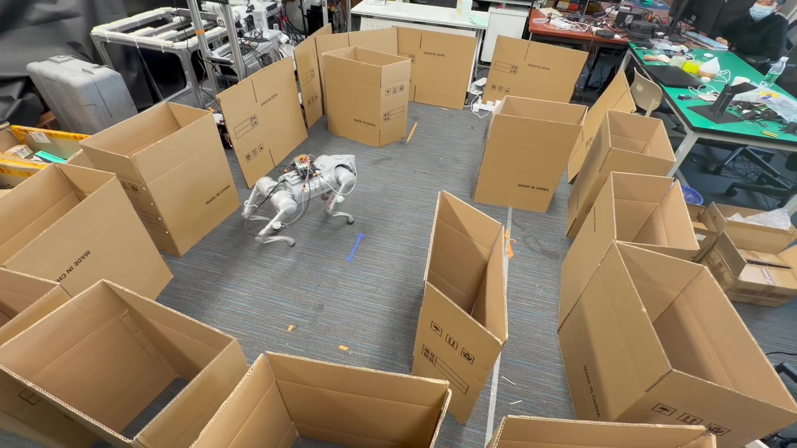

01 / MAZE NAVIGATIONA changing route.
A changing route.
The same objective.
Four demonstrated layouts with zero to three obstacles. Follow the robot as it navigates toward the odor source.
Continuous trials · Playback marked at 1.5×